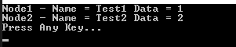
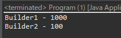
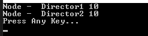
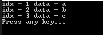

[Design pattern] 1-2. ビルダーパターン(Builder pattern)
こんにちは。明月です。
この投稿はデザインパターンのビルダーパターン(Builder pattern)に関する説明です。
ビルダーパターンとは我々が普通にクラスのインスタンスを生成する時にnewキーワードを使った生成しますが、その方法ではなく、他のクラスを利用してインスタンスを生成するパターンだといいます。
そしてインスタンス中でデータを入力するし、そのついて処理関数などを呼び出してクラスのデータを処理する方法です。仕様によって違いますが、クラスの目的があり、初期値及びデータはどのぐらい決まっているし特定なパターンによりクラスのデータを入力する方法で使います。
実行関数及びロジック関数でクラスの初期値を入力する方もありますが、その方法は不便なこともあるし、ソース読みにくいです。
using System;
namespace Example
{
// Node1の例クラス
class Node1
{
// メンバー変数とgetter, setterプロパティ
public string Name { get; set; }
public int Data { get; set; }
// 出力関数
public void Print()
{
// コンソール出力
Console.WriteLine("Node1 - Name = " + Name + " Data = " + Data);
}
}
// Node2の例クラス
class Node2
{
// メンバー変数とgetter, setterプロパティ
public string Name { get; set; }
public int Data { get; set; }
// 出力関数
public void Print()
{
// コンソール出力
Console.WriteLine("Node2 - Name = " + Name + " Data = " + Data);
}
}
// 実行関数があるクラス
class Program
{
// 実行関数
static void Main(string[] args)
{
// インスタンス生成
var node1 = new Node1();
// 変数設定
node1.Name = "Test1";
node1.Data = 1;
// 関数でコンソール出力
node1.Print();
// インスタンス生成
var node2 = new Node2();
// 変数設定
node2.Name = "Test2";
node2.Data = 2;
// 関数でコンソール出力
node2.Print();
Console.WriteLine("Press Any Key...");
Console.ReadKey();
}
}
}

上のソースが間違っているかエラーが発生するか、パフォーマンスが悪いソースではありません。でも、Nodeクラスのインスタンスを生成してメンバー変数にデータを格納する形が少しコードが汚いらしいです。
もし、Nodeクラスで使う変数が多い状況や、クラスのインスタンスを生成するために処理が多い場合(パラメータデータを作成するための処理)にはそのほどソースの可読性が悪くなります。
そうなら、コンストラクタでNodeクラスに必要なパラメータデータを渡したらいいではないかと思いますが、インスタンスを生成して変数値を格納する構造と別に変数を生成して入力してコンストラクタパラメータで渡す構造と結局同じ構造になります。
そうならすこしソースを減らすような方法でNode1とNode2の共通インタフェースを作って関数などを通ってインスタンスを生成して受け取ったらソースステップを減らすこともできるし可読性を高められます。
using System;
namespace Example
{
// Node1クラスとNode2クラスの共通インタフェース
interface INode
{
// 関数
void Print();
}
// Node1の例クラス : インタフェースINode継承
class Node1 : INode
{
// メンバー変数とgetter, setterプロパティ
public string Name { get; set; }
public int Data { get; set; }
// 出力関数
public void Print()
{
// コンソール出力
Console.WriteLine("Node1 - Name = " + Name + " Data = " + Data);
}
}
// Node2の例クラス : インタフェースINode継承
class Node2 : INode
{
// メンバー変数とgetter, setterプロパティ
public string Name { get; set; }
public int Data { get; set; }
// 出力関数
public void Print()
{
// コンソール出力
Console.WriteLine("Node2 - Name = " + Name + " Data = " + Data);
}
}
// 実行関数があるクラス
class Program
{
// 生成パターン
static INode Build(string type, string name, int data)
{
// 返却のための変数
INode ret = null;
// typeがNode1の場合(大小文字無視)
if ("NODE1".Equals(type, StringComparison.OrdinalIgnoreCase))
{
// インスタンス生成
ret = new Node1();
// 変数設定
((Node1)ret).Name = name;
((Node1)ret).Data = data;
}
// typeがNode1の場合(大小文字無視)
if ("NODE2".Equals(type, StringComparison.OrdinalIgnoreCase))
{
// インスタンス生成
ret = new Node2();
// 変数設定
((Node2)ret).Name = name;
((Node2)ret).Data = data;
}
return ret;
}
// 実行関数
static void Main(string[] args)
{
// インスタンス生成
var node1 = Build("node1", "Test1", 1);
// 関数でコンソール出力
node1.Print();
// インスタンス生成
var node2 = Build("node2", "Test2", 2);
// 関数でコンソール出力
node2.Print();
Console.WriteLine("Press Any Key...");
Console.ReadKey();
}
}
}
上のソースはBuild関数を使ってクラスインスタンスを生成しました。そして始めのパラメータを通ってクラスを区分してインスタンスを生成しました。
ロジック流れだけみれば上の例もビルダーパターン(Builder pattern)です。でも、Build関数をみれば変数設定のために強制キャストしてデータを入力しました。結局、初めの例と差異がありません。
正確にビルダーパターン(Builder pattern)を実装するためにはパラメータ役のBuilderクラスとBuildを実行するDirectorクラスを通ってデータを設定して最終結果のNodeクラスを受け取ることがビルダーパターン(Builder pattern)です。

#pragma once
#include <stdio.h>
#include <iostream>
using namespace std;
// Builderクラス、データを収集してインスタンスを生成するためのクラス。
class Builder {
private:
// メンバー変数
int type = -1;
string name;
int data;
public:
// 初期化データ
void setInitialize(string name, int data) {
this->name = name;
this->data = data;
}
// メンバー変数を受け取るためのgetter
string getName() {
return this->name;
}
// メンバー変数を受け取るためのgetter
int getData() {
return this->data;
}
};
// 抽象クラス(インタフェース)
class INode {
public:
virtual void initialize(Builder*) = 0;
virtual void print() = 0;
};
// Nodeインスタンスを生成するクラス
class Director {
private:
// Nodeクラスのメンバー変数
INode* node;
public:
// インスタンス生成
void setNode(int type) {
if (type == 0) {
// 変数が0ならNode1インスタンスを生成
this->node = new Node1();
} else if (type == 1) {
// 変数が1ならNode1インスタンスを生成
this->node = new Node2();
}
}
// 生成されたインスタンス変数を実行 - Nodeインスタンスを返却する。
INode* build(Builder* builder) {
this->node->initialize(builder);
return this->node;
}
// インスタンスを実行
void execute() {
this->node->print();
}
private:
// INodeクラスを継承したNode1クラス
class Node1 : public INode {
private:
// メンバー変数
string name;
int data;
public:
// メンバー変数の値を設定する関数
virtual void initialize(Builder* builder) {
this->name = builder->getName();
this->data = builder->getData();
}
// コンソール出力
virtual void print() {
cout << "Node1 - Name = " << this->name << " Data = " << this->data << endl;
}
};
// INodeクラスを継承したNode2クラス
class Node2 : public INode {
private:
// メンバー変数
string name;
int data;
public:
// メンバー変数の値を設定する関数
virtual void initialize(Builder* builder) {
this->name = builder->getName();
this->data = builder->getData();
}
// コンソール出力
virtual void print() {
cout << "Node2 - Name = " << this->name << " Data = " << this->data << endl;
}
};
};
// 実行関数
int main() {
// builderインスタンス生成
Builder builder;
// directorインスタンス生成
Director director;
// builderインスタンスにデータ設定
builder.setInitialize("Test1", 1);
// Nodeインスタンス生成
director.setNode(0);
// インスタンスにデータを設定して受け取る。
INode* node1 = director.build(&builder);
// インスタンス実行
director.execute();
// builderインスタンスにデータ設定
builder.setInitialize("Test2", 2);
// Nodeインスタンス生成
director.setNode(1);
// インスタンスにデータを設定して受け取る。
INode* node2 = director.build(&builder);
// インスタンス実行
director.execute();
// メモリ削除
delete node1;
delete node2;
return 0;
}
簡単に作ろうと思いましたが、ずいぶん複雑になりましたね。
上の設定はBuilderインスタンスでデータを設定します。Directorのクルスにtypeデータを入力してNode1かNode2のインスタンスを生成します。
そしてDirectorにBuilderインスタンスを入れてデータを組み立てます。もちろん、組み立てしたデータを使ってもいいし、execute関数を実行して生成されたインスタンスを実行することもできます。
上の例はNode1とNode2クラスがDirectorクラス中で宣言されています。
これは選択事項ですが、普通はソースの管理のため、つまり、このクラスを使うユーザ(開発者)がNode1とNode2クラスのインスタンスをビルダーパターン(Builder pattern)を利用して作るという制約です。つまり、仕様によってインラインクラスではなく、一般publicクラスで作成しても構いません。
上にあるクラスダイアグラムとソースの内容は少し差異があります。私は一つのBuilderと一つのDirectorを通ってNodeのインスタンスの種類別で返却します。このパターンもビルダーパターン(Builder pattern)です。
でも、他のケーズもあります。つまり、様々なBuilderと一つのDirectorを通って一つのNodeインスタンスが生成する方法と一つのBuilderと様々なDirectorがあるし、あるいは様々なBuilderとDirector、Nodeインスタンスで生成する場合もあります。
今回には様々なBuilderと一つのDirector、一つのNodeを返却するJava例です。
// 実行する関数があるクラス
public class Program {
// 実行関数
public static void main(String[] args) {
// Directorインスタンス生成
Director director = new Director();
// Builderインスタンス生成
IBuilder builder = new Builder1(10);
// DirectorインスタンスでNodeインスタンス生成
INode node = director.build(builder);
// nodeインスタンスのprint関数実行
node.print();
// Builderインスタンス生成
builder = new Builder2(10);
// DirectorインスタンスでNodeインスタンス生成
node = director.build(builder);
// nodeインスタンスのprint関数実行
node.print();
}
}
// Nodeインタフェース
interface INode {
void print();
}
// Builderインタフェース
interface IBuilder {
int getData();
}
// Builder1クラス
class Builder1 implements IBuilder {
// メンバー変数
private int data;
// コンストラクタでデータを格納
public Builder1(int data) {
this.data = data;
}
// Builder1クラスはgetDataを通って100倍データをリターン
public int getData() {
return this.data * 100;
}
}
// Builder1クラス
class Builder2 implements IBuilder {
// メンバー変数
private int data;
// コンストラクタでデータを格納
public Builder2(int data) {
this.data = data;
}
// Builder2クラスはgetDataを通って10倍データをリターン
public int getData() {
return this.data * 10;
}
}
// Directorクラス
class Director {
// インラインクラスでNodeクラスを制御する。つまり、外部ではNodeクラスのインスタンス生成できない。
class Node implements INode {
// メンバー変数
private String data;
// 出力関数
public void print() {
System.out.println(data);
}
}
// Nodeインスタンスを生成してリターン
public INode build(IBuilder builder) {
// インスタンス生成
Node node = new Node();
// データを生成
node.data = builder.getClass().getName() + " - " + builder.getData();
// リターン
return node;
}
}

Javaの例はBuilderを二つ作成しました。NodeクラスとDirectorクラスは一つです。
つまり、Builderクラス種類別でNodeクラスのデータが変わる流れです。NodeクラスはインラインクラスなのでBuilderパターンを通らないとインスタンス生成ができません。
C#は様々なDirectorクラスと一つのBuilderクラス、一つのNodeクラスの例です。
using System;
namespace Example
{
// Nodeクラスのインタフェース
interface INode
{
// 出力関数
void Print();
}
// Directorクラスのインタフェース
interface IDirector
{
// Nodeクラスのインスタンスを作成するための関数
INode Build(Builder builder);
}
// 抽象クラス(Nodeインラインクラスを作るため)
abstract class AbstractDirector : IDirector
{
// Nodeクラス
protected class Node : INode
{
// メンバー変数
public string Data { get; set; }
// 出力関数
public void Print()
{
// コンソール出力
Console.WriteLine("Node - " + Data);
}
}
// Nodeクラスのインスタンスを作成するための関数
public abstract INode Build(Builder builder);
}
// Builderクラス
class Builder
{
// メンバー変数
public int Data { get; private set; }
// コンストラクタ
public Builder(int data)
{
this.Data = data;
}
}
// Director1クラス
class Director1 : AbstractDirector
{
// Nodeクラスのインスタンスを作成するための関数
public override INode Build(Builder builder)
{
// インスタンス生成
Node node = new Node();
// データ設定
node.Data = " Director1 " + builder.Data;
// リターン
return node;
}
}
// Director2クラス
class Director2 : AbstractDirector
{
// Nodeクラスのインスタンスを作成するための関数
public override INode Build(Builder builder)
{
// インスタンス生成
Node node = new Node();
// データ設定
node.Data = " Director2 " + builder.Data;
// リターン
return node;
}
}
// 実行関数があるクラス
class Program
{
// 実行関数
static void Main(string[] args)
{
// Builderのインスタンスを生成
Builder builder = new Builder(10);
// Director1のインスタンスを生成
IDirector director = new Director1();
// Nodeのインスタンスを生成
INode node = director.Build(builder);
// 出力関数実行
node.Print();
// Director2のインスタンスを生成
director = new Director2();
// Nodeのインスタンスを生成
node = director.Build(builder);
// 出力関数実行
node.Print();
Console.WriteLine("Press Any Key...");
Console.ReadKey();
}
}
}

ビルダーパターン(Builder pattern)は例をみればすごく複雑だし、なぜこのパターンを使うかと思います。私の場合はすごく簡単な例で説明するからすごく複雑に見えますが、逆にすごく複雑な仕様では可読性を改善して思いよりすごく有用なパターンです。
事実は我々が作成したソースをみると知らずに適応したことも多いパターンです。すごくよく使います。
using System;
using System.Data;
using System.Data.SqlClient;
using System.Collections.Generic;
namespace Example
{
// builder役のクラス、クエリとデータベース情報がある。
class DBInformation
{
public SqlCommand Sqlcommand
{
get; set;
}
}
// Director役のクラス、データベースと連結しデータを取得するクラス
class Dao
{
// データベースのデータをList<Test>値で返却する。
public List<Test> Build(DBInformation info)
{
try
{
// データベースコネクションオープン
info.Sqlcommand.Connection.Open();
// query実行
var dr = info.Sqlcommand.ExecuteReader();
// インスタンスリスト生成
var ret = new List<Test>();
// row個数ほど繰り返し
while (dr.Read())
{
// インスタンス生成
Test node = new Test();
// インスタンスにデータを格納
node.Idx = dr.GetInt32(0);
node.Data = dr.GetString(1);
// リストに追加
ret.Add(node);
}
// リターン
return ret;
}
finally
{
// 最終的にコネクション終了
info.Sqlcommand.Connection.Close();
}
}
}
// Node役のクラス
class Test
{
// メンバー変数
public int Idx { get; set; }
public String Data { get; set; }
}
// 実行関数があるクラス
class Program
{
// SqlCommandを生成する関数
private static SqlCommand GetConnection(string query)
{
// インスタンス生成
var ret = new SqlCommand();
ret = new SqlCommand();
ret.Connection = new SqlConnection();
// データベースサーバ設定
ret.Connection.ConnectionString = "Server=****; Database=****; User Id=****; Password=****;";
ret.CommandType = CommandType.Text;
// クエリ設定
ret.CommandText = query;
// リターン
return ret;
}
/*
CREATE TABLE TEST(
idx int primary key IDENTITY(1,1),
data nvarchar(255) null
)
insert into TEST values('a');
insert into TEST values('b');
insert into TEST values('c');
*/
// 実行関数
static void Main(string[] args)
{
// データベース情報を入力
var builder = new DBInformation();
// コネクション生成
builder.Sqlcommand = GetConnection("SELECT IDX, DATA FROM TEST");
// インスタンス生成
var director = new Dao();
// データをBuildする。(データベースからデータを取得する。)
var list = director.Build(builder);
// データ個数ほどに繰り返す。
foreach (var node in list)
{
// コンソール出力
Console.WriteLine("idx - " + node.Idx + " data - " + node.Data);
}
Console.WriteLine("Press any key...");
Console.ReadKey();
}
}
}

上の例は実際のプロジェクト使える例です。コネクションを生成する関数は簡単に作成しましたが、DB種類(MysqlやOracle)でビルダーパターン(Builder pattern)を作られるパターンです。
実際にConnectionライブラリはシングルトンパターン(Singleton pattern)とビルダーパターン(Builder pattern)などを使って作成されています。
ここまでデザインパターンのビルダーパターン(Builder pattern)に関する説明でした。
ご不明なところや間違いところがあればコメントしてください。
- [Design pattern] 1-4. デザインパターンの抽象ファクトリーパターン(Abstract factory pattern)2021/10/15 19:31:03
- [Design pattern] 1-3. ファクトリーメソッドパターン(Factory method pattern)2021/06/23 19:45:37
- [Design pattern] 1-2. ビルダーパターン(Builder pattern)2021/06/11 19:06:28
- [Design pattern] 1-1. シングルトンパターン(Singleton pattern)2021/06/09 19:40:05
- [Design Pattern] デザインパターンの紹介2021/06/08 20:42:36
- [C#] 54. Reflection機能を使い方 - Attribute2021/10/20 19:29:31
- [Project design] プログラム制作(コーディング) - クラス作成方法2021/10/20 19:28:09
- [C#] 53. Reflection機能を使い方 - Propertyとevent2021/10/19 21:02:58
- [Project design] プログラム制作(コーディング) - 関数作成方法2021/10/19 21:01:32
- [CentOs] ジェンキンス(Jenkins)をインストールする方法2021/10/18 18:28:58
- [Project design] 詳細設計(インターフェース設計と抽象化作業)2021/10/18 18:23:15
- [Project design] 基本設計(画面設計とDB設計)2021/10/17 21:21:11
- [Design pattern] 1-4. デザインパターンの抽象ファクトリーパターン(Abstract factory pattern)2021/10/15 19:31:03
- [Project design] 要件定義(要求事項整理)2021/10/15 19:28:58
- [C#] 52. Reflection機能を使い方 - Variable2021/10/15 19:27:37
- [Project design] プロジェクトを工程(ウォーターフォール vs アジャイル)2021/10/14 18:36:04
- [C#] 51. Reflection機能を使い方 - Method2021/10/14 18:34:21
- [C#] 50. Reflection機能を使い方 - Class2021/10/13 18:34:13
- [C#] 49. Operator(演算子)のオーバーロードを使い方2021/10/12 18:28:42
- [C#] 48. IEnumerableとIEnumerator、そしてyieldキーワード2021/10/11 19:49:33